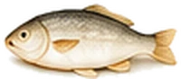
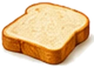

Fried Food and Gallstones: Why It Triggers Pain and What to Eat Instead
Ask anyone with gallstones what set off their first attack, and fried food comes up again and again. It's the single most common trigger, and the good news is that it's also one of the easiest to work around.

 Get the printable list of fried foods to avoid, and the safe swaps. Get the free Gallstones Fridge Guide →
Get the printable list of fried foods to avoid, and the safe swaps. Get the free Gallstones Fridge Guide →
Why fried food is so hard on your gallbladder
When food is fried, it soaks up oil. Batter and breadcrumbs soak up even more. A plain boiled potato has almost no fat at all, but turn it into chip-shop chips and it can carry as much fat as a whole meal should.
When that fat reaches your gut, your body releases a hormone called cholecystokinin (CCK). It tells your gallbladder to squeeze hard and push out bile to break the fat down. If a stone is sitting near the exit, that squeeze can press it against the opening or into the duct, and that's when the pain starts. More fat means a harder squeeze, which is why a fried meal is so much more likely to cause an attack than a lighter one.
The worst fried foods for gallstones
| Food | Verdict | Why |
|---|---|---|
| Fish and chips from the chip shop | Red | Battered fish and deep-fried chips together |
| Fried chicken and chicken nuggets | Red | Skin plus coating, deep-fried |
| Full English breakfast (fried) | Red | Fried eggs, bacon, sausages and fried bread in one sitting |
| Onion rings, spring rolls, samosas, bhajis | Red | Batter or pastry, deep-fried |
| Doughnuts | Red | Deep-fried dough, often filled with cream |
| Crisps | Amber | Fried, but a small bag is a modest amount. Baked crisps are lighter. |
| Stir-fry with a teaspoon of oil | Green | Very little oil, lots of vegetables |
Swaps that keep the crunch
You don't need to give up the foods you love. Changing how you cook them makes the biggest difference.



Is an air fryer worth it with gallstones?
For a lot of people, yes. An air fryer is a small fan oven: it crisps food with hot air instead of a pan of oil. Most things need a light spray or a teaspoon of oil, and some need none at all. Chips, potato wedges, breaded chicken, fish fillets and roasted vegetables all come out crisp with a fraction of the fat.
One thing to watch: frozen chips, nuggets and fish fingers are often part-fried before they're frozen. Check the fat per 100g on the pack, and choose the products with green or amber labels.
Better ways to cook
- Grill meat and fish on a rack so the fat drips away.
- Bake or roast on baking paper with a few sprays of oil instead of a pool of it.
- Poach or steam fish, chicken and eggs.
- Stir-fry in a non-stick pan or wok with a teaspoon of oil and a splash of water or stock.
- Microwave vegetables and fish; it's quick and needs no fat at all.
Eating out
Restaurants and takeaways fry far more than most people realise. A few questions help: ask for food grilled instead of fried, choose boiled rice or a jacket potato instead of chips, have sauces on the side, and look for words like "grilled", "steamed", "baked" or "tandoori" on the menu. Avoid "crispy", "battered", "tempura", "golden" and "pan-fried".
The bottom line
Fried food is the trigger most worth cutting back on. You don't have to give up chips, chicken or fish; just cook them in the oven, under the grill or in an air fryer. It's one change that makes a real difference for most people with gallstones.
When to get help straight away
Get urgent advice from your GP or NHS 111 if tummy pain lasts longer than 30 minutes. Call 999 or go to A&E if you have:
- sudden, severe tummy pain
- pain spreading to your back, with vomiting
- a very high temperature, or you feel hot, cold or shivery
- yellow skin or yellowing in the whites of your eyes
Don't drive yourself. No food or drink on this site replaces medical care.
Questions people ask
Why does fried food cause gallbladder pain?
Fried food is soaked in oil, so it's very high in fat. Fat tells your gallbladder to squeeze out bile, and if a gallstone is in the way, that squeeze can cause pain. The more fat in one meal, the stronger the squeeze.
Is air-fried food OK with gallstones?
Usually, yes. An air fryer uses a teaspoon of oil or none at all, so air-fried chips or chicken have a fraction of the fat of deep-fried versions. Watch out for frozen foods that are already coated in oil or batter.
Can I eat fish and chips with gallstones?
A full portion from the chip shop is one of the most common triggers. If you really fancy it, share a portion, choose a smaller size, or make a home version with oven-baked breadcrumbed fish and oven chips.
Are oven chips better than chip-shop chips?
Yes. Oven chips are usually much lower in fat than chips deep-fried in a chip shop or takeaway. Check the pack and choose thicker, straight-cut chips, which absorb less oil than thin fries or crinkle cuts.
Is stir-frying OK?
A stir-fry made with a teaspoon or two of oil is fine for most people, and it's a great way to eat more vegetables. It's deep-frying and shallow-frying in a lot of oil that cause problems.
How long after eating fried food does gallbladder pain start?
Pain often begins within an hour or so of a fatty meal, and sometimes later in the evening or at night. If pain lasts longer than 30 minutes, get urgent advice from your GP or NHS 111.
More food guides
 Foods to avoid with gallstonesThe complete list of common triggers, with easy swaps.
Foods to avoid with gallstonesThe complete list of common triggers, with easy swaps. Milk and gallstonesWhole, skimmed or oat? Every milk compared.
Milk and gallstonesWhole, skimmed or oat? Every milk compared. Cheese and gallstonesLightest to heaviest, with safe portion sizes.Eggs and gallstonesWhy the white and the yolk get different verdicts.
Cheese and gallstonesLightest to heaviest, with safe portion sizes.Eggs and gallstonesWhy the white and the yolk get different verdicts. Bananas and gallstonesOne of the safest fruits you can eat, even on a bad day.Alcohol and gallstonesWhat the research says, drink by drink.
Bananas and gallstonesOne of the safest fruits you can eat, even on a bad day.Alcohol and gallstonesWhat the research says, drink by drink. The complete gallstones dietEvery food sorted into choose, limit and avoid.
The complete gallstones dietEvery food sorted into choose, limit and avoid. Gallbladder painWhere it hurts, what triggers it and when to get help.
Gallbladder painWhere it hurts, what triggers it and when to get help.